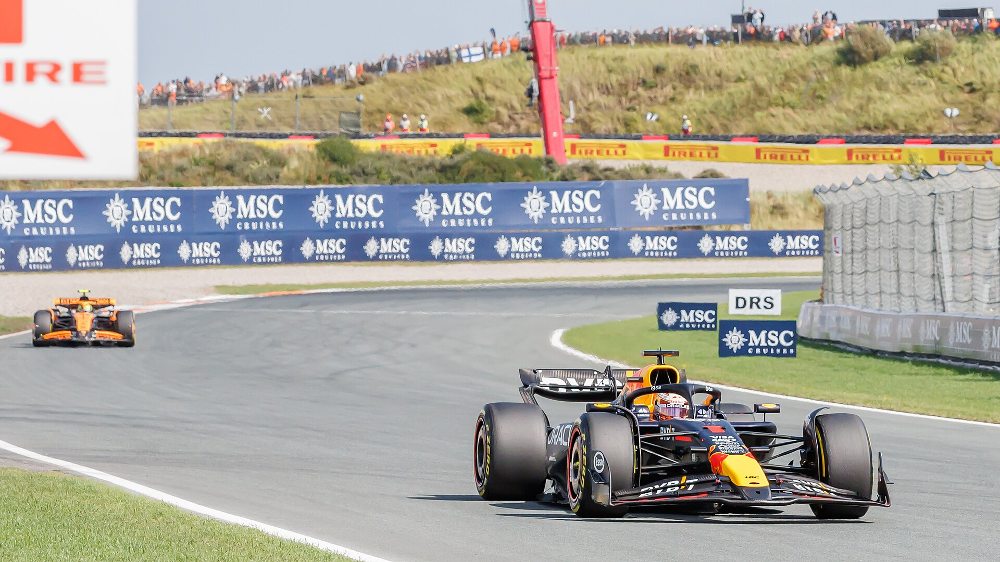

A Fórmula 1 retoma a temporada de 2026 em um cenário que mistura tradição, curvas inclinadas, arquibancadas tomadas pela torcida holandesa e um peso histórico especial. O GP da Holanda será disputado de 21 a 23 de agosto no Circuit Zandvoort, no litoral do país, e abre a segunda metade do campeonato depois da pausa de verão europeu.
A etapa é a 12ª do calendário desta temporada e terá também o formato Sprint. Na sexta-feira haverá apenas um treino livre antes da classificação da Sprint. No sábado serão disputadas a corrida curta e a classificação para o Grande Prêmio. A prova principal acontece no domingo, com 72 voltas.
O fim de semana também carrega um significado que vai além da disputa por pontos. A Fórmula 1 e os organizadores anunciaram que o GP da Holanda deixará o calendário depois de 2026. A categoria trata a etapa deste ano como o 40º e último evento de F1 em Zandvoort dentro do atual projeto.
A relação entre o autódromo e a Fórmula 1 começou em 1952. O circuito recebeu regularmente o campeonato durante décadas, deixou o calendário depois de 1985 e retornou em 2021, encerrando um intervalo de 36 anos.
A volta aconteceu justamente durante a ascensão de Max Verstappen, que transformou o GP da Holanda em uma das etapas de maior identificação entre piloto e torcida. O holandês venceu as três primeiras provas depois do retorno, em 2021, 2022 e 2023. Lando Norris interrompeu a sequência em 2024, enquanto Oscar Piastri ganhou a última edição em 2025.
O maior vencedor da história da prova continua sendo Jim Clark, com quatro triunfos.
A decisão do promotor de não permanecer no calendário depois de 2026 transforma o fim de semana de agosto em uma despedida de uma pista que construiu uma identidade própria. Não se trata apenas de uma corrida em casa para Verstappen: Zandvoort passou a representar visualmente a chamada “Orange Army”, com grandes setores das arquibancadas dominados pelo laranja e uma atmosfera que a própria Fórmula 1 associa a um festival.
Como é o circuito
Ele tem 4,259 quilômetros de extensão. A corrida de Fórmula 1 é programada para 72 voltas, com distância oficial de pouco mais de 306 quilômetros. A volta mais rápida registrada em corrida no traçado atual pertence a Lewis Hamilton, com 1min11s097, marca estabelecida em 2021.
O circuito tem 14 curvas e atravessa a região de dunas próxima ao Mar do Norte. O desenho é curto, ondulado e repleto de mudanças de direção, criando uma volta muito diferente da encontrada em autódromos formados por longas retas e fortes zonas de frenagem.
Dois trechos chamam especialmente a atenção pelo banking, a inclinação do asfalto. As curvas 3 e 14 possuem inclinações acentuadas, e a última curva chega a aproximadamente 18 graus. É uma das principais características visuais e técnicas de Zandvoort.
A localização também faz parte da personalidade do GP. O circuito fica junto à costa do Mar do Norte, próximo a Amsterdã. O vento é uma presença natural na região, e a própria areia das dunas ajuda a compor uma das paisagens mais características do calendário.
Sprint muda o fim de semana
Isso significa que equipes e pilotos terão muito menos tempo para trabalhar no acerto dos carros antes de começar a disputar posições relevantes.
A sexta-feira terá apenas o Treino Livre 1. Depois disso, acontece a classificação específica que define o grid da Sprint. No sábado, será realizada em 24 voltas ou dentro do limite previsto pelo regulamento do evento, antes da classificação tradicional que organiza o grid da corrida de domingo.
A Sprint distribui pontos para os oito primeiros colocados: oito para o vencedor, sete para o segundo, seguindo a escala até um ponto para o oitavo. O resultado não determina o grid do Grande Prêmio; essa função pertence à classificação realizada mais tarde no sábado.
Para Zandvoort, esse formato acrescenta um desafio particular. Em vez dos três treinos livres de um fim de semana convencional, as equipes têm apenas uma sessão para coletar dados e ajustar os carros antes da primeira classificação.
Como chega o campeonato e o que pode mudar
O GP da Holanda abre a segunda metade da temporada com o campeonato ainda bastante aberto atrás de Kimi Antonelli. O italiano da Mercedes chega a Zandvoort com uma vantagem de 50 sobre Lewis Hamilton. George Russell aparece logo depois.
A situação ganha importância extra porque Zandvoort terá formato Sprint. Além dos 25 pontos disponíveis para o vencedor do Grande Prêmio, o ganhador da Sprint recebe outros oito. Assim, um piloto pode acrescentar até 33 pontos ao campeonato durante o fim de semana.
Para os Construtores, o impacto potencial é ainda maior. Considerando os dois carros, uma equipe pode somar até 58 pontos caso faça primeiro e segundo lugares tanto na Sprint quanto no Grande Prêmio.
Classificação do Mundial de Pilotos:
- Kimi Antonelli (Mercedes) — 219 pontos
- Lewis Hamilton (Ferrari) — 169 pontos
- George Russell (Mercedes) — 160 pontos
- Charles Leclerc (Ferrari) — 138 pontos
- Lando Norris (McLaren) — 128 pontos
- Max Verstappen (Red Bull Racing) — 109 pontos
- Oscar Piastri (McLaren) — 92 pontos
- Isack Hadjar (Red Bull Racing) — 68 pontos
- Liam Lawson (Racing Bulls) — 43 pontos
- Pierre Gasly (Alpine) — 42 pontos
- Arvid Lindblad (Racing Bulls) — 23 pontos
- Franco Colapinto (Alpine) — 19 pontos
- Oliver Bearman (Haas) — 18 pontos
- Gabriel Bortoleto (Audi) — 10 pontos
- Carlos Sainz (Williams) — 6 pontos
- Alexander Albon (Williams) — 5 pontos
- Esteban Ocon (Haas) — 3 pontos
- Nico Hülkenberg (Audi) — 2 pontos
- Fernando Alonso (Aston Martin) — 1 ponto
- Lance Stroll (Aston Martin) — 0 ponto
- Valtteri Bottas (Cadillac) — 0 ponto
- Sergio Pérez (Cadillac) — 0 ponto
A vantagem construída por Antonelli garante uma situação importante: independentemente do que acontecer na Holanda, o piloto da Mercedes continuará líder depois da etapa.
O mesmo vale para Russell, que está 59 pontos atrás do companheiro de Mercedes. Portanto, a disputa mais imediata em Zandvoort não é pela primeira posição do campeonato, mas por reduzir a vantagem de Antonelli e reorganizar o grupo de perseguidores.
E isso pode acontecer rapidamente.
Hamilton e Russell estão separados por apenas nove pontos. Russell pode sair da Holanda na segunda colocação caso consiga uma diferença suficiente sobre o piloto da Ferrari. Mais atrás, Leclerc está 22 pontos atrás de Russell e dez à frente de Norris.
Norris, por sua vez, chega especialmente fortalecido: venceu o GP da Hungria, última corrida antes das férias, dando à McLaren sua primeira vitória de 2026.
Antonelli é o nome de maior peso pelo conjunto da temporada. O líder venceu seis dos primeiros 11 Grandes Prêmios e chega com ampla vantagem na classificação. A Mercedes, por sua vez, venceu oito das 11 corridas realizadas até a pausa de verão.
Russell também precisa ser colocado nesse grupo. Além de ocupar a terceira posição no Mundial, venceu na Austrália e na Áustria e tem a oportunidade de atacar diretamente o segundo lugar de Hamilton.
A Ferrari apresenta dois candidatos fortes para Zandvoort. Hamilton venceu em Barcelona e é o principal perseguidor de Antonelli no campeonato, enquanto Leclerc ganhou em Silverstone. A presença do britânico acrescenta ainda mais peso à temporada da equipe italiana, unindo a trajetória histórica de Lewis Hamilton à história da Ferrari na principal categoria do automobilismo. Os dois resultados conquistados pela escuderia em 2026 mostraram que a equipe possui capacidade de interferir diretamente na luta na frente.
A McLaren talvez represente a maior incógnita positiva. Norris venceu na Hungria imediatamente antes da pausa, justamente no momento em que a disputa na frente começou a apresentar maior variedade de vencedores. Oscar Piastri também merece atenção especial: além de competir pela equipe que venceu a rodada anterior, foi justamente o vencedor do GP da Holanda de 2025.
Classificação do Mundial de Construtores
- Mercedes — 379 pontos
- Ferrari — 307 pontos
- McLaren — 220 pontos
- Red Bull Racing — 177 pontos
- Racing Bulls — 66 pontos
- Alpine — 61 pontos
- Haas — 21 pontos
- Audi — 12 pontos
- Williams — 11 pontos
- Aston Martin — 1 ponto
- Cadillac — 0 ponto
Mercedes e Ferrari não podem perder suas posições em Zandvoort
No Mundial de Construtores, algumas contas são ainda mais claras. A Mercedes possui 72 pontos de vantagem sobre a Ferrari. Como uma equipe pode conquistar no máximo 58 pontos durante o fim de semana Sprint, a liderança da Mercedes está matematicamente garantida depois do GP da Holanda, independentemente dos resultados.
A Ferrari também está protegida na segunda colocação nesta rodada. São 87 pontos de vantagem sobre a McLaren, diferença maior do que os 58 disponíveis para uma equipe em Zandvoort.
Com Sprint e Grande Prêmio no mesmo fim de semana, portanto, a Holanda não deve mudar o nome do líder dos dois campeonatos, mas pode mexer de forma significativa imediatamente abaixo deles. Antonelli e Mercedes sairão de Zandvoort ainda no topo; a grande questão é com qual vantagem e em que ordem Hamilton, Russell, Leclerc, Norris, Verstappen, Ferrari, McLaren e Red Bull iniciarão a reta seguinte da temporada.
Cronograma do GP
Os horários abaixo estão convertidos para o horário de Brasília. A programação oficial da Fórmula 1 estabelece as seguintes sessões:
Sexta-feira, 21 de agosto
- Treino Livre 1: 7h30
- Classificação Sprint: 11h30
Sábado, 22 de agosto
- Corrida Sprint: 7h
- Classificação para o GP: 11h
Domingo, 23 de agosto
- GP da Holanda: 10h
Onde assistir
No Brasil, a Fórmula 1 tem TV Globo e sportv como emissoras oficiais na temporada de 2026.
Zandvoort reúne história, Sprint e despedida
O GP da Holanda de 2026 reúne três elementos capazes de dar identidade própria ao fim de semana: a retomada da temporada depois das férias, a estreia do formato Sprint em Zandvoort e o encerramento do atual ciclo do circuito no calendário da Fórmula 1.
A pista continua sendo um dos traçados mais reconhecíveis da categoria por suas curvas inclinadas, pela passagem entre as dunas e pela proximidade do Mar do Norte. Ao mesmo tempo, a presença de Max Verstappen transformou o evento moderno em uma celebração do automobilismo holandês.
Entre 21 e 23 de agosto, porém, o significado será ainda maior. Depois de receber a Fórmula 1 pela primeira vez em 1952, desaparecer do campeonato por mais de três décadas e retornar cercado por uma onda laranja em 2021, Zandvoort chega ao fim de seu atual capítulo na categoria com pontos em disputa já no sábado e um último Grande Prêmio programado para domingo.